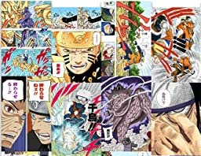

There is so much about Anime and Manga to explore!
Manga & Anime
Manga
 Manga is a style of Japanese comic books
and graphic novels that originated in Japan. The word "manga" refers to both the art style and the
medium itself. Manga is characterized by its distinct visual style, which often features large eyes,
exaggerated facial expressions, and dynamic action scenes. Manga covers a wide range of genres, from
action and adventure to romance and comedy, and is popular both in Japan and around the world. Manga is
typically read from right to left, and can be published in a variety of formats, including weekly or
monthly magazines, tankobon volumes, and digital platforms.
Anime, on the other hand, is a style of
Japanese
animated entertainment that is often based on manga or light novels. Anime can be seen as an extension
of the manga medium, as it adapts many popular manga series into animated form. Like manga, anime covers
a wide range of genres, from action and adventure to romance and comedy, and is enjoyed by audiences of
all ages. Anime is known for its vibrant and detailed animation style, which often incorporates elements
of Japanese culture and mythology. Anime can be distributed through various platforms, including
television, streaming services, and home video releases.